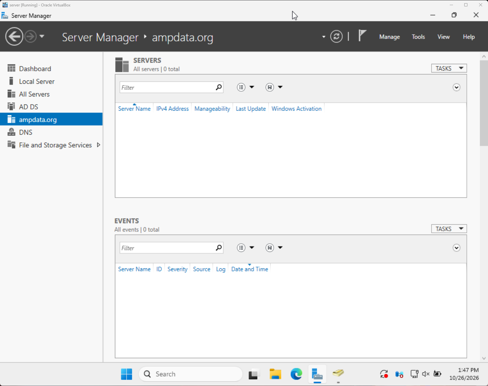
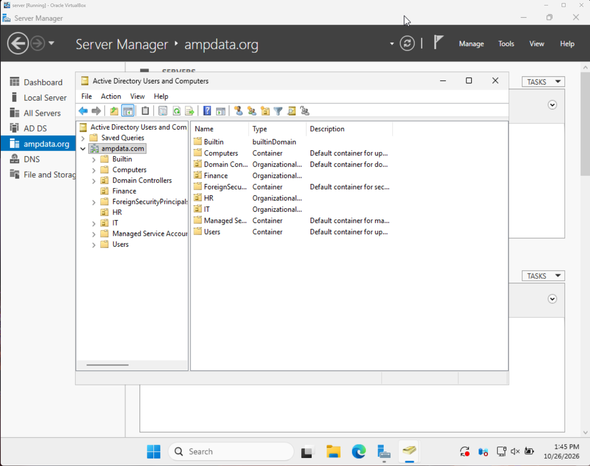
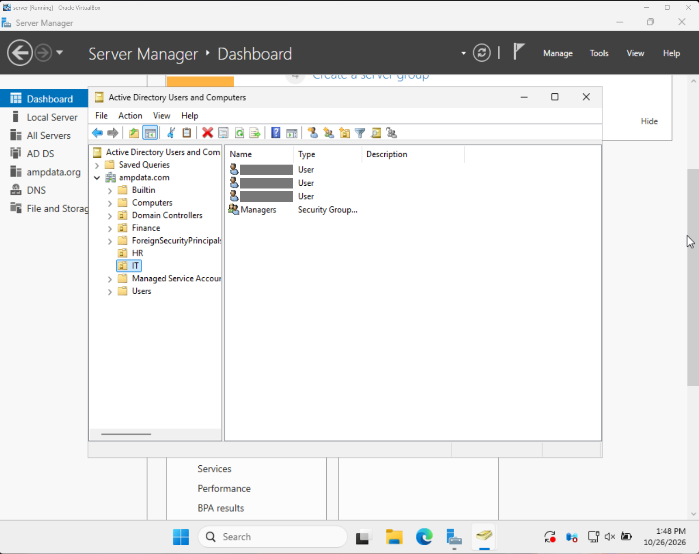
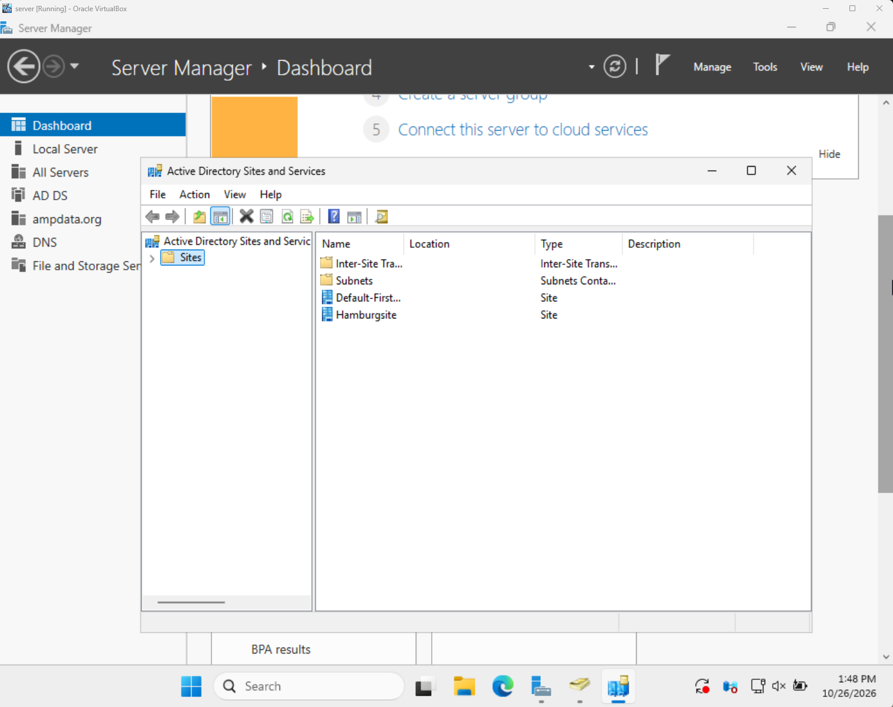

Active Directory home lab
I built a Windows Server 2022 virtual machine and used it to learn how companies manage users, permissions, and servers with Active Directory. My domain is ampdata.org.
- Windows Server 2022
- Windows 11
- VirtualBox
- AD DS
ampdata.org (forest root) ├─ Finance │ └─ users ├─ IT │ └─ users ├─ HR │ └─ users └─ Managers (group) members from all 3 OUs Site: HamburgSite
Environment and tools
| Layer | What I used | Role in the lab |
|---|---|---|
| Host computer | Windows 11 (64-bit) | The physical PC that runs everything else |
| Virtualization | Oracle VirtualBox | Runs the server as a virtual machine, isolated from my PC |
| Server VM | Windows Server 2022 | The domain controller for my domain, ampdata.org |
| Directory service | Active Directory Domain Services | Stores users, groups, and OUs, and handles sign-ins |
Utilities on the server: Server Manager, Active Directory Users and Computers, Active Directory Sites and Services, and Active Directory Domains and Trusts.
Part 1: Building the server VM
A virtual machine is a full computer that runs inside a window on my own PC. It gives me a safe place to learn: if I make a mistake, I can fix it or rebuild, and nothing outside the VM is affected.
- Got the installer. I downloaded a Windows Server 2022 ISO, which is a disc image of the operating system.
- Created the VM in VirtualBox. I gave it a name, pointed it to the ISO, and set aside memory, CPU, and a virtual disk from my PC.
- Installed Windows Server 2022. I booted the VM from the ISO, ran the installer, and set the Administrator password.
- Opened Server Manager. This is the main control panel of a Windows Server. It shows the server's roles, status, and tools in one place.

Part 2: Active Directory Domain Services
I installed the AD DS role and promoted the server to a domain controller. This created my domain, ampdata.org, and made it the root of my forest.
Organizational units. I created OUs for Finance, IT, and HR so accounts are organized the way a real company would structure them.

Users and groups. I created users inside each OU, then made a security group called Managers and added users from different OUs to it.

Managing user accounts
Day-to-day admin work happens in Active Directory Users and Computers. Right-clicking a user lets me:
- Reset the password, and require the user to change it at next sign-in.
- Disable an account when someone leaves or should not have access, and enable it again later.
- Unlock an account that was locked after too many failed sign-in attempts.
The physical side: where and how
Sites. I created a site named HamburgSite in Active Directory Sites and Services. Sites describe the real network layout, and AD uses them to decide where clients sign in and how domain controllers sync.

Replication. I am learning the two kinds:
- Intra-site replication happens between domain controllers in the same site. It is fast and automatic.
- Inter-site replication happens between sites over site links. It runs on a schedule to save bandwidth.
Domains and trusts
A forest is the top-level container that holds one or more domains. My first domain is the forest root. In the Active Directory Domains and Trusts console, you can create trust relationships so users in one domain or forest can use resources in another. This is common when two organizations work together.
Skills demonstrated
- Setting up a virtual lab with VirtualBox
- Installing and navigating Windows Server 2022
- Creating and promoting a domain controller
- Designing OUs, users, and security groups
- Resetting passwords and disabling accounts
- Creating AD sites and understanding replication
Up next
- Take a VM snapshot so I can roll back after risky changes
- Group Policy Objects (GPOs)
- Add a second domain controller and watch replication work
- File share permissions for the Managers group